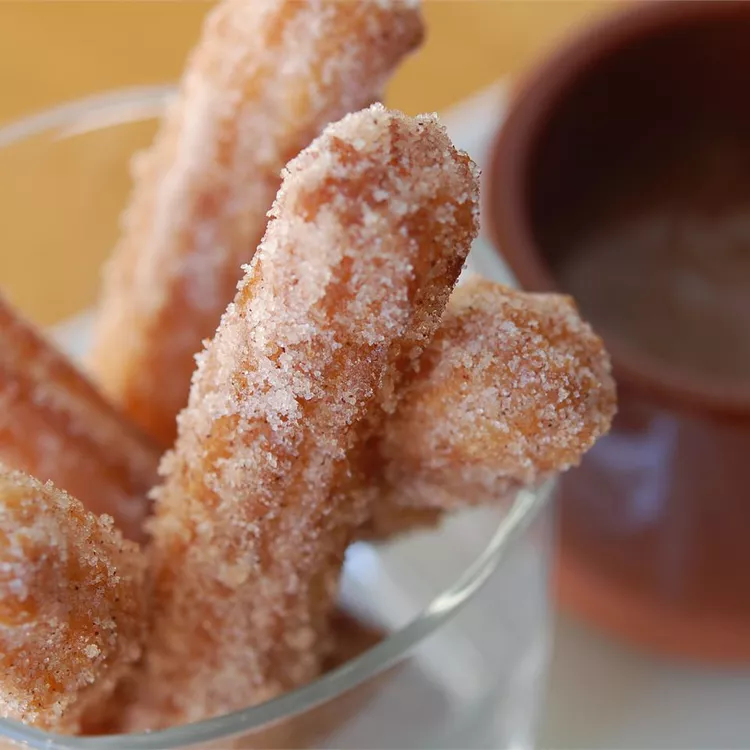

Churros
Churros

Description
- 1 cup water
- 3 tablespoons white sugar
- 1/2 teaspoon salt
- 2 tablespoons begetable oil
- 1 cup all-purpose flour
- 2 quarts oil for frying
- 1/2 cup white sugar, or to taste
- 1 teaspoon ground cinnamon
Steps
- Combine water, 3 tablespoons sugar, salt, and 2 tablespoons vegetable oil in a small
saucepan and place over medium heat. Bring to a boil and remove from the heat. Stir in
flour, stirring until mixture forms a ball.
- Heat oil for frying in a deep fryer or deep pot to 375 degrees F.
- Transfer dough to a sturdy pastry bag fitted with a medium star tip. Carefully pipe